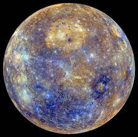

At a distance of only about 1/3 of Earth's distance to Sun, Mercury is the first planet in our Solar System.
With a diameter of only 4880 kilometers (3032 miles) Mercury is the smallest planet in the Solar System. It is barely bigger than our Moon.
Not only is Mercury the smallest planet, it is also shrinking!
Back to home